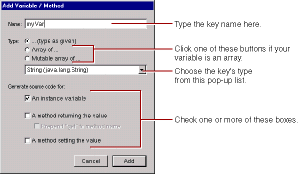
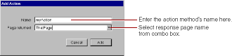
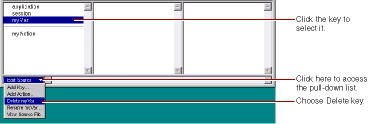
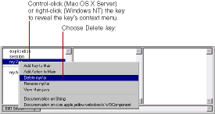

PATH
Documentation > WebObjects 4.5 >
Tools and Techniques
Working with Keys in WebObjects Builder
At the bottom of the object browser, there is a pull-down list called Edit Source File.
It has five items:
-
Add Key
allows you to add a key (an instance variable or a method that returns a value) to your source file.
-
Add Action
allows you to add the template for an action (a method that takes no parameters and returns a component).
-
Delete Key
deletes a key from your source file by deleting its instance variable and accessor methods.
-
Rename Key
renames a key in your source file by renaming its instance variable and accessor methods.
-
View Source File
opens the source file in a Project Builder window.
When you choose Add Key, the following panel opens:

In this panel, you specify:
-
The name of the key.
-
Its type.
You can choose the type from the combo box or type it in directly. You can also use the radio buttons to specify whether the variable is an array.
-
How the key is implemented.
The key can be an instance variable whose value is accessed directly, or a method that returns a value (not necessarily associated with an instance variable). You can also create a method that sets the value of an instance variable.
When you click Add, the key's name appears in the object browser (below application
and session
). To see what was added to your source code, choose View Source File from the Edit Source pull-down list in the object browser. You'll see something like the following:
protected String myVar;
public String myVar() {
return myVar;
}
public void setMyVar(String newMyVar) {
myVar = newMyVar;
}
The first line defines the instance variable. The first method returns its value. The second method sets its value.
When you choose Add Action, the following panel appears:

When you click Add, the following code is added to your source file:
public ThatPage myAction()
{
ThatPage nextPage = (ThatPage)pageWithName("ThatPage");
// Initialize your component here
return nextPage;
}
WebObjects Builder provides these ways to add variables and methods for your convenience. Of course, you can add variables and methods directly to your component's code by editing them in Project Builder.
To delete a key, select it in the object browser and choose Delete
Key
from the Edit Source pull-down list. Any variables and methods associated with the key are deleted from the source file. You can restore the deleted key by selecting Undo from the Edit menu.

You can also delete the key with its context menu.
-
Control-click the key on Rhapsody or right-click the key on Windows NT
-
Choose Delete key
from the menu that appears.

To rename a variable or method, select its key in the object browser and choose Rename
Key
from the Edit Source pull-down list. In the panel that appears, enter the new name for the key and click Rename. Any variables and methods associated with the key are renamed.
Alternatively, you can rename the key with its context menu.
-
Control-click the key on Rhapsody or right-click the key on Windows NT.
-
Choose Rename key
from the context menu that appears.
-
Enter the new name in the panel that appears.
© 1999 Apple Computer, Inc. – (Last Updated July 27 99)